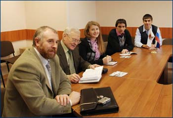
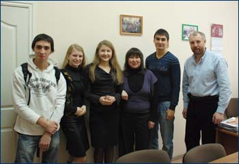
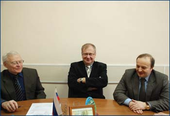
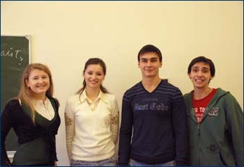
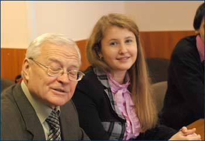
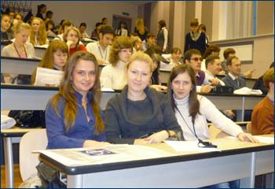

|
Представляем Вашему вниманию отзывы
студентов о своих научных и учебных стажировках.
Новыми учебными программами пополнен раздел "Электронная
библиотека".
Факультет
международных отношений ВГУ с официальным визитом с 3 по 11 декабря
2009 года посетила делегация Национальной Академии Управления
(г. Киев).
Четверо
студентов Академии под руководством доктора исторических наук Юрия
Алексеевича Чугаенко, приехали в Воронежский государственный университет
для укрепления и расширения партнерских отношений между Факультетом
международных отношений и Национальной Академией Управления, фундаментом
для которых послужило соглашения о сотрудничестве, подписанное 2 октября
2009 года.
В
ходе визита было проведен ряд важнейших встреч с руководством ВГУ,
администрацией факультета международных отношений, Воронежского
представительства, Министерства иностранных дел Российской Федерации
и Торгово-Промышленной Палаты Воронежской области.
Украинских
коллег заинтересовал вопрос об опыте организации студенческого самоуправления
в ВГУ. За время своего визита делегаты также приняли участие в работе
научного круглого стола «Современные проблемы мировой экономики»
и дискуссионного клуба по вопросам современных отношений России
и Украины.
Г-н
Чугаенко выступил перед студентами факультета международных отношений
с лекцией «Дипломатический протокол и этикет», вызвавшей живой интерес
со стороны как студенчества, так и профессорско-преподавательского
состава факультета. Преподаватель кафедры международной экономики
и внешнеэкономической деятельности, кандидат экономических наук,
доцент Д.Г. Ломсадзе, провел для студентов Национальной академии
Управления индивидуальные лекции по теме «Методологические основы
подготовки специалистов в области мировой экономики в ВГУ» и «Теневая
экономика».
Создан новый раздел "Учебные
программы" на кафедре английского языка в профессиональной
международной деятельности.
С
3 по 5 декабря 2009 года в Санкт-Петербургском государственном
университете телекоммуникаций им. М.А. Бонч-Бруевича состоялась
XI Международная студенческая научно-практическая конференция.
Наряду со студентами из различных уголков России в конференции
приняли участие студенты из Латвии и Украины.
Несмотря на то, что само проведение конференций предполагает серьезный
настрой и научный подход, данная конференция прошла очень интересно,
живо и увлекательно. Всему этому способствовали теплый прием участников
и хорошая организация.
Программа конференции включала в себя различные мероприятия, которые
способствовали знакомству участников друг с другом, пленарное заседание,
на котором выступили с докладами как преподаватели ВУЗа, так и эксперты
в области PR, политики и экономики (Чумиков А.Н, Мединский В.О,
Пахута А.С., Асейкина Ю.В.).
Студенты факультета международных отношений принимали участие
в мастер-классах, круглых столах, где участники вместе с профессионалами
могли обсудить наиболее актуальные проблемы современности, а также
получили возможность обменяться новыми идеями во время работы по
различным секциям.
Размещена новая информация в разделе "Ссылки".
Размещена новая информация в разделе "Научная
деятельность".
Размещена информация о сотрудниках
факультета.
Размещена новая информация в разделе "Наши
партнеры".
Размещена новая информация в разделе "Абитуриентам".
Начата работа над созданием сайта факультета международных отношений.
|